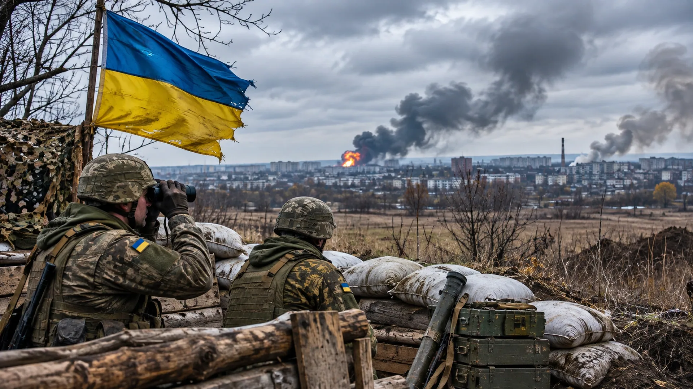

UKRAINE AND TAIWAN EXPLORE DRONE TIES
Defense technology companies from Taiwan and Ukraine have signed an agreement to explore supply-chain cooperation.

The future of military drones may be shaped as much by factory floors and electronics supply chains as by battlefields. Taiwan and Ukraine understand that problem from different directions, and their interests are beginning to overlap.
Ukraine has developed extensive practical experience using and countering inexpensive unmanned systems during its war with Russia. Taiwan has deep electronics and manufacturing capabilities while seeking ways to strengthen its own defenses and reduce reliance on vulnerable foreign supply chains.
Cooperation between companies and defense-technology communities could combine those strengths. But an exploratory agreement or commercial discussion is not the same thing as a fully operating joint production line. The scale, financing, technology transfer and military procurement outcomes still have to be established.
The strategic appeal is obvious. Modern drones need airframes, motors, sensors, radios, batteries, software and dependable components. If one crucial part comes from a supplier that becomes unavailable during a crisis, a large production plan can stall. Resilient supply chains can therefore be a national-security asset.
Ukraine's experience also demonstrates that the technology changes rapidly. Countermeasures evolve, radio links are jammed and designs must be adapted. A successful partnership would require continuous engineering and feedback rather than a single impressive prototype.
The development to watch is not a ceremonial announcement. It is whether contracts are signed, manufacturing capacity is built and reliable systems reach users. In this field, a modest factory producing thousands of effective devices may matter more than an expensive demonstration that never scales.
Sources and further reading: Reporting and source material